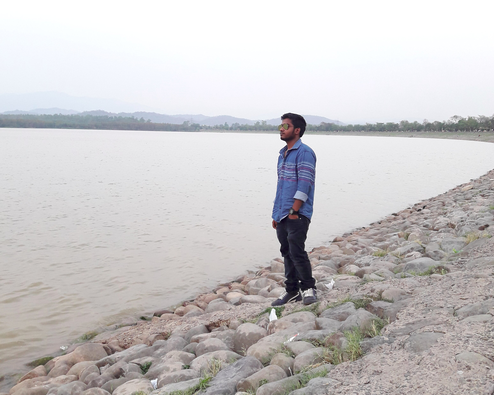
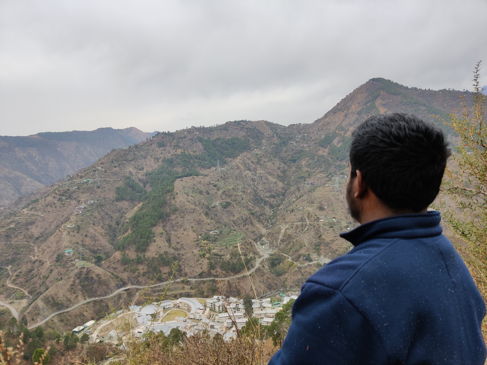
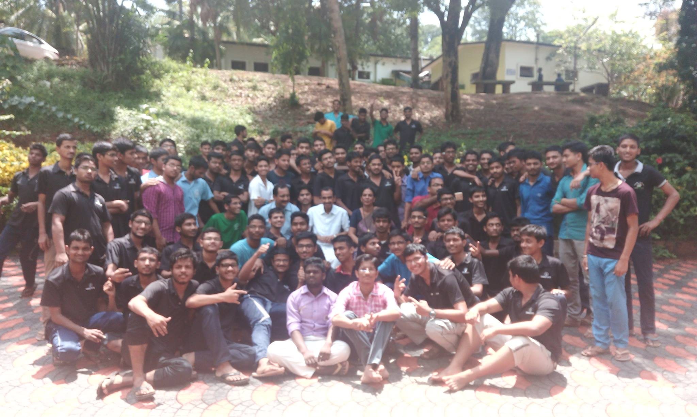
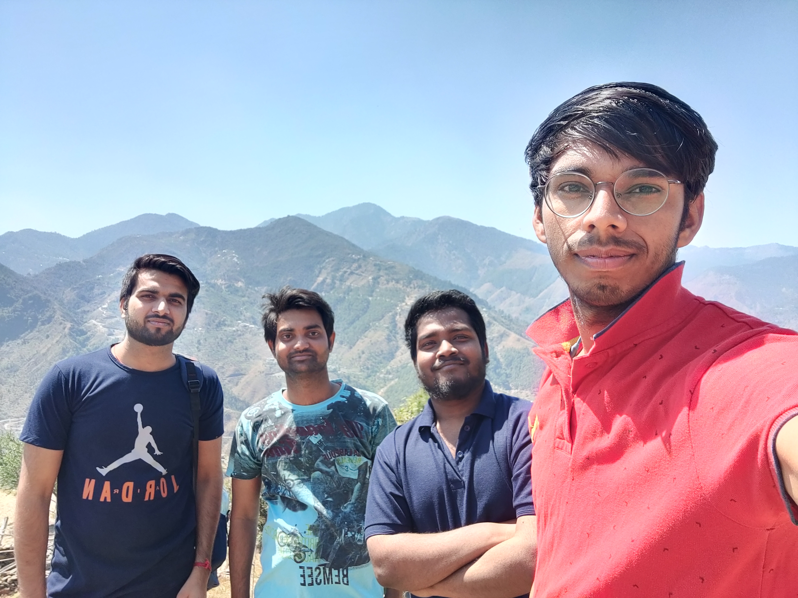
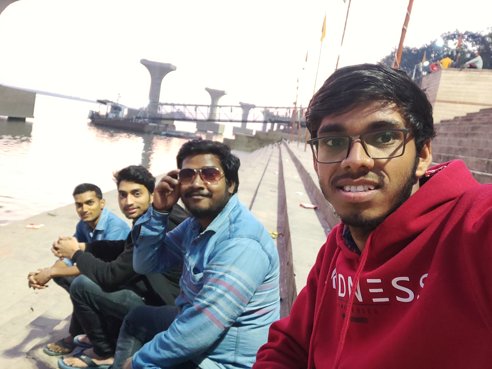
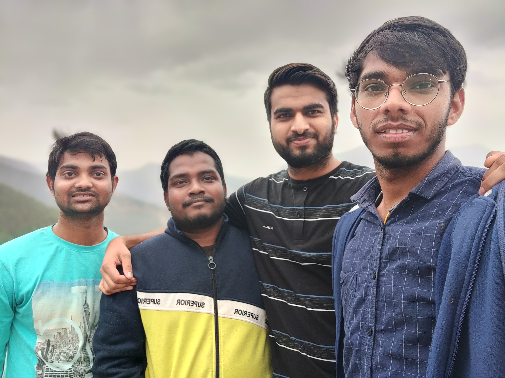
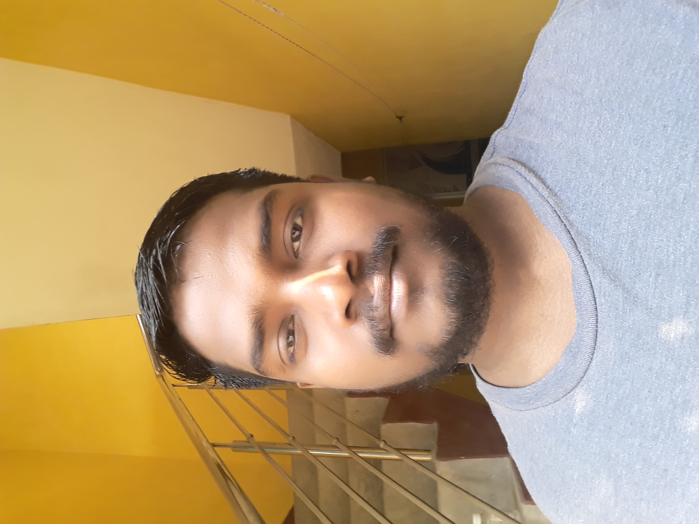

Web development : ReactJs, NodeJs, ExpressJs, MongoDB, Flask, HTML, JavaScript, CSS, MySQL
Programming Skills : C/C++, Python
Deep learning : Google Colab, Keras, Tensorflow, Dlib, scikit-learn
Image processing : OpenCv2, Scipy
Operating Systems : Linux
Other Tools : Git, Github
Other Languages: Bash
Technical courses: Data Structures and Algorithms, Algorithm Design and Analysis, Deep Learning and Applications, Communicating
Distributed Processes, Digital Image Processing, Pattern Recognition, Data Handling and Visualization, Performance Analysis of
Computer Networks, Information and Database systems, Computer Organization, System practicum, Paradigms of Programming,
Applied Database practicum, Mathematical Foundations of Computer Science, Computation for Engineers
Hobbies
Playing badminton and cricket
Reading books
Projects
Lane detection for autonomous vehicles
Digital image processing course Under Dr. Anil sao
SeMEnD
Gender and Age group prediction
Bayesian classNameifier(Machine learning)
Pattern recognition course Under Dr. Arnav Bhavsar
IIT Mandi donation drive
Information and Database Systems course Under Dr. Arti Kashyap
Flask Web-app Development : A webapp Developed in Flask(a python framework) is based on donation
between people belongs to IIT Mandi and Club running in IIT Mandi including NSS.Here people can donate
money,blood, daily use items.
Data Management and Optimization : Integrated MySQL data engine with front-end to make a fully
functional website.
Apple sorting Machine( 2nd prize winner)
Design practicum course Under Dr. Ajay soni and Dr. Rajeev kumar
Image processing: Colour and size sorting of apple using image processing
Know and secure yourself
24 hour college hackathon 2k18
Technology/Tools: Python Flask, BeautifulSoup, MySQL
CodeAssist
Contributed in Winter project 2k18 under college senior
Tools used: Node.JS | JavaScript | Judge0 API | cURL | HTML | CSS
Search for any programmer on different platform
self learning project
Technology/Tools: Python Flask, BeautifulSoup, MySQL
Gallary







Address
Deepak Kumar Near Bright career public school Dudhpura,Samastipur Bihar 848101 India